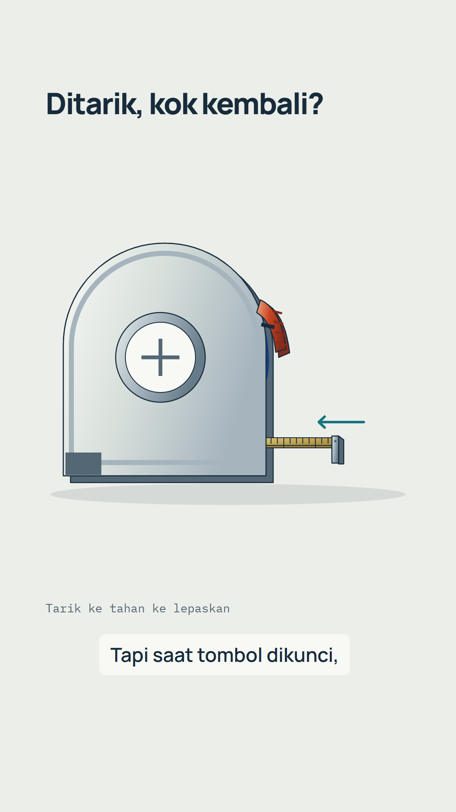
01: Ditarik, kok kembali?
0.00–5.13s · measured
Pita meteran ditarik, lalu kembali sendiri. Tapi saat tombol dikunci, kenapa pitanya bisa diam?

Pita meteran ditarik, lalu kembali sendiri. Tapi saat tombol dikunci, kenapa pitanya bisa diam?
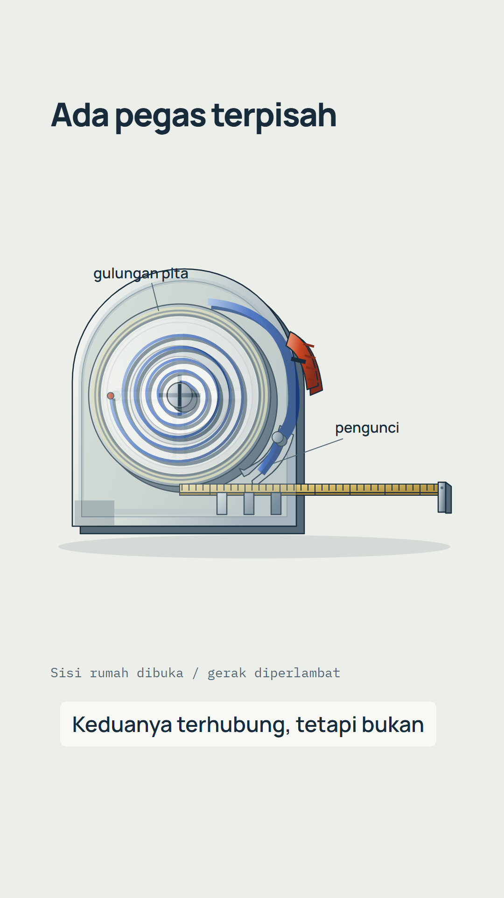
Di dalamnya ada gulungan pita dan pegas pengembali. Keduanya terhubung, tetapi bukan bagian yang sama.
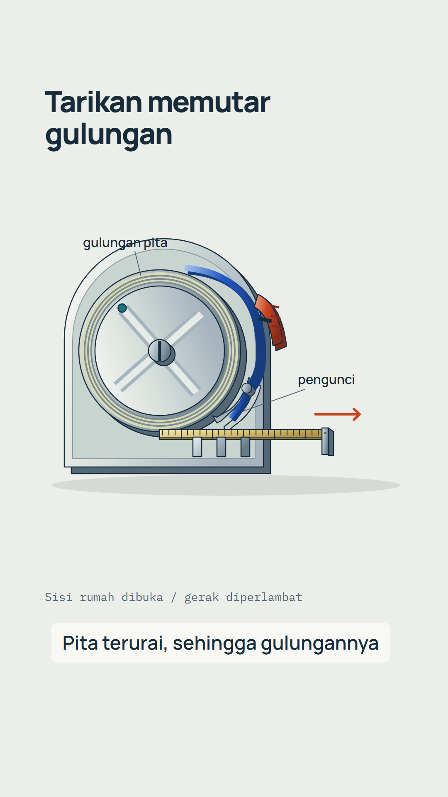
Kita mulai saat pita ditarik. Pita terurai, sehingga gulungannya ikut berputar pada poros.
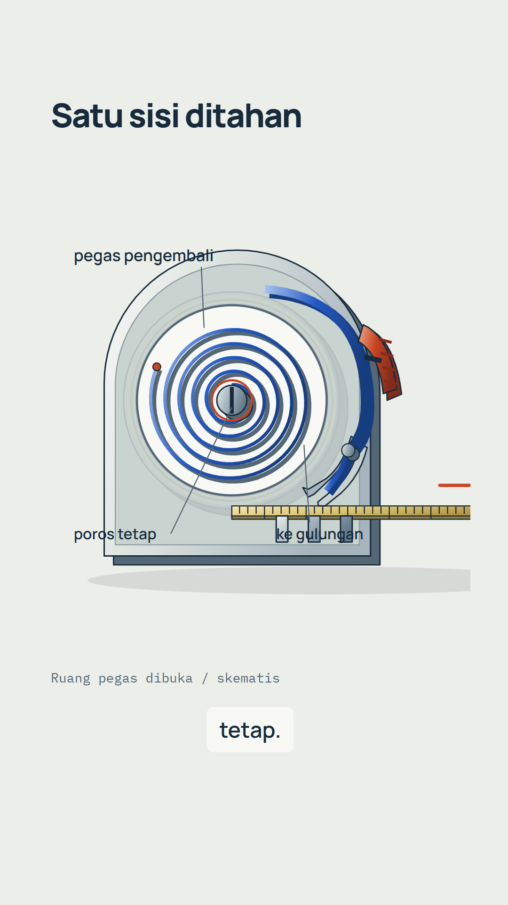
Pegas pipih terhubung ke bagian berputar dan tumpuan tetap. Jadi, tarikan pita mengubah bentuk pegas.
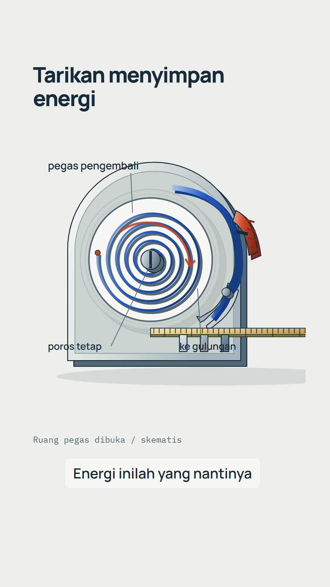
Pegas menyimpan energi dari tarikan tadi. Energi inilah yang nantinya memutar gulungan ke arah sebaliknya.
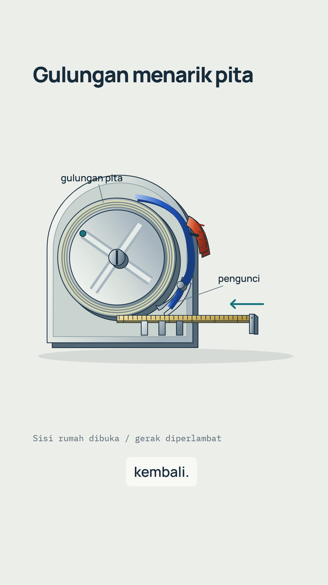
Saat tarikan dilepas, pegas menggerakkan gulungan kembali. Pita pun tergulung masuk ke dalam rumahnya.
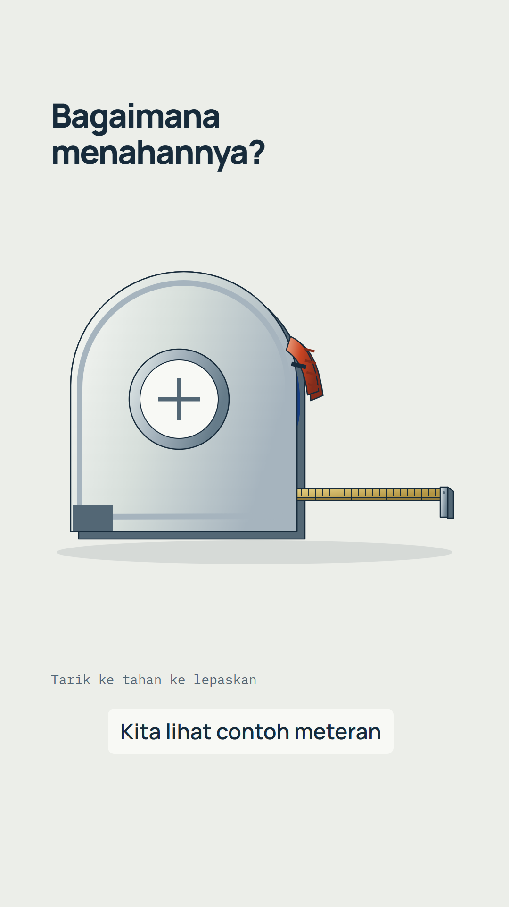
Lalu bagaimana tombol menahannya? Kita lihat contoh meteran dengan pengunci geser dan lidah lentur ini.
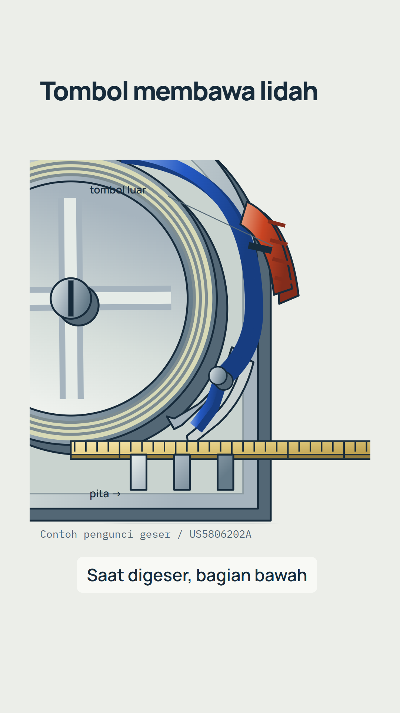
Tombol luar terhubung ke pengunci di dalam. Saat digeser, bagian bawah pengunci turun mendekati pita.
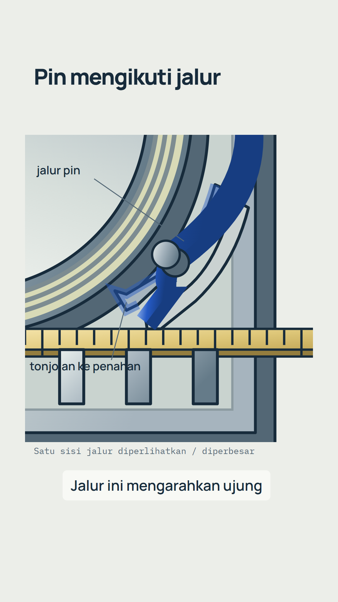
Dua pin kecil mengikuti jalur di rumah meteran. Jalur ini mengarahkan ujung lidah menuju permukaan pita.
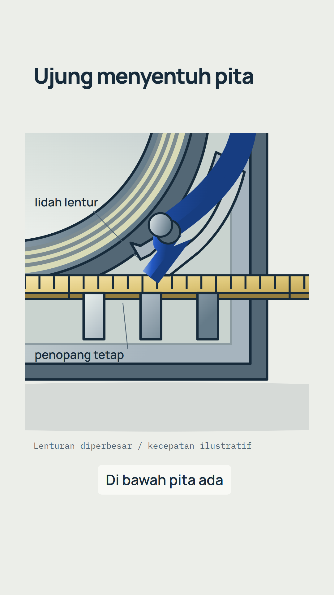
Mula-mula, ujung lidah menyentuh pita. Di bawah pita ada penopang yang menjadi lawan tekanannya.
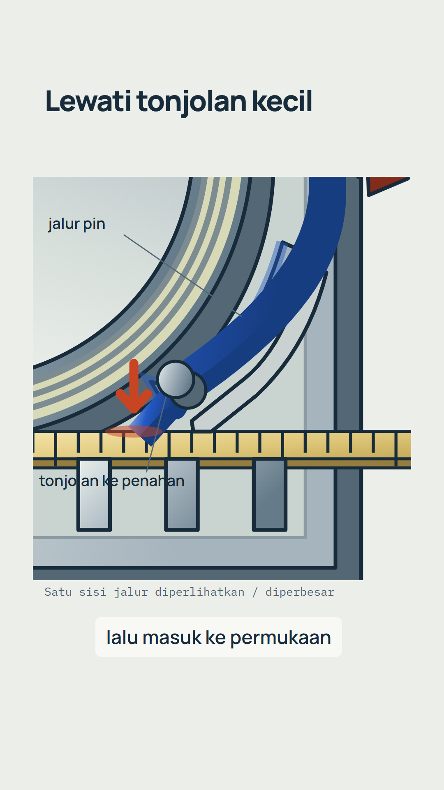
Dorongan dilanjutkan. Pin melewati tonjolan kecil, lalu masuk ke permukaan penahan. Gerakan ini membuat lidah makin melentur.
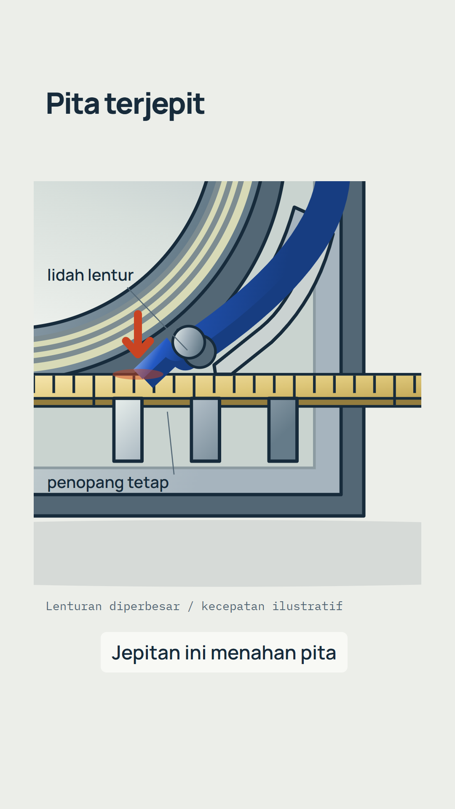
Lidah yang melentur menekan pita ke penopangnya. Jepitan ini menahan pita agar tidak ditarik kembali oleh pegas.
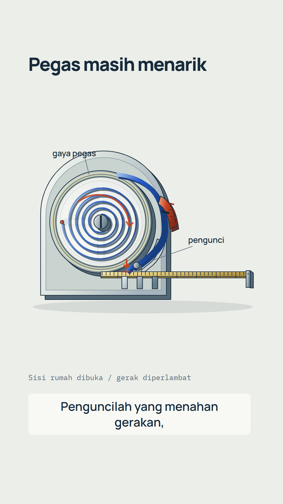
Jadi, pegasnya tetap memberi tarikan. Penguncilah yang menahan gerakan, selama jepitannya masih bekerja.
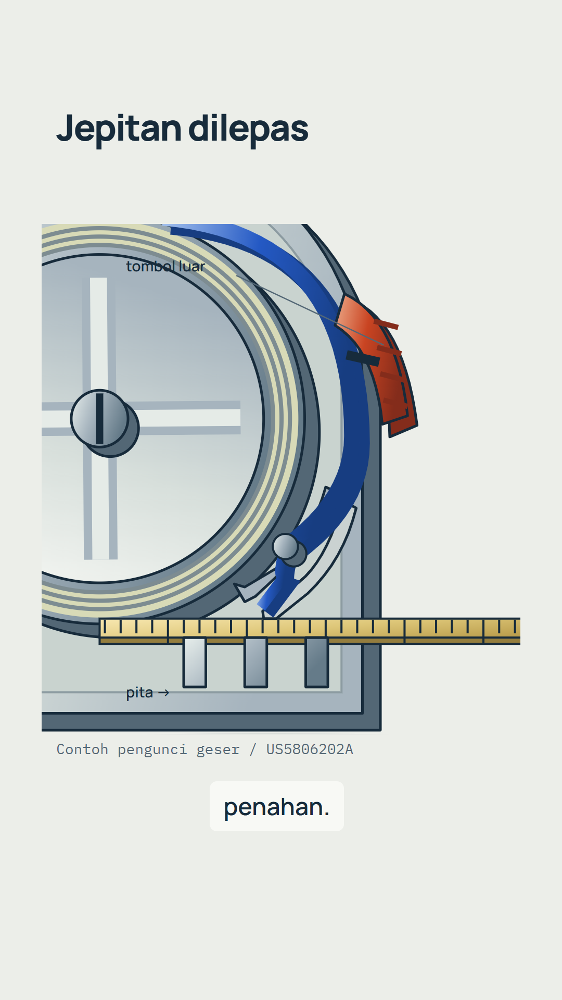
Saat tombol digeser kembali, pin keluar dari posisi penahan. Lidah terangkat, dan jepitan pada pita terlepas.
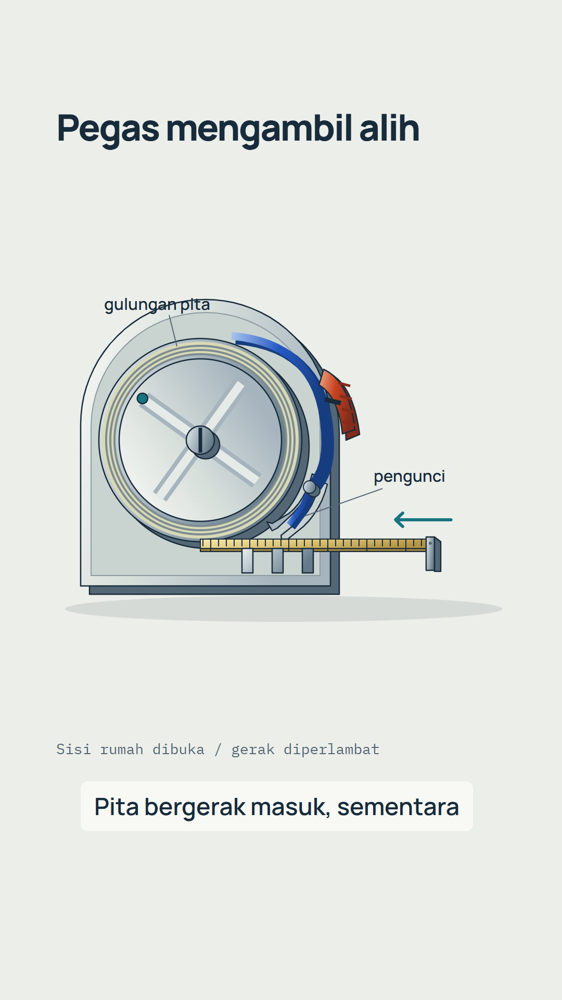
Sekarang pegas bisa memutar gulungan lagi. Pita bergerak masuk, sementara pengunci tetap menjauh dari jalurnya.
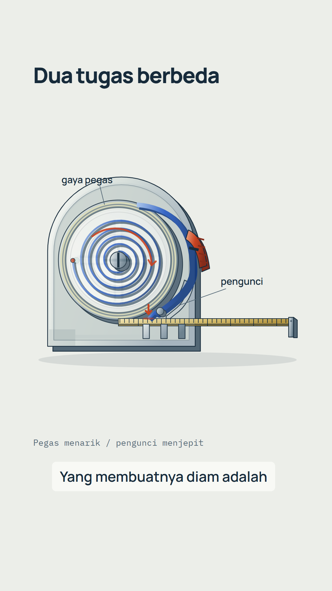
Jadi, yang mengembalikan pita adalah pegas. Yang membuatnya diam adalah jepitan pengunci. Tombolnya mengatur jepitan itu.